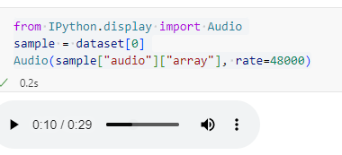

Traitement des audios pour la création de datasets audio¶
Ça fait un moment que je n’ai pas publié, et c’est surtout parce que j’ai été absorbé par mon projet open source de création de datasets en Moore et l’entraînement de modèles locaux. Beaucoup de choses ont été réalisées en coulisses, et j’ai décidé de publier un article par mois pour vous tenir au courant. Pour plus de détails, n’hésitez pas à faire un tour sur mon GitHub ici ou à consulter mon profil Hugging Face ici.
Aujourd’hui, je vais vous raconter comment j’ai abordé le traitement de fichiers audio, depuis leur chargement jusqu’à leur agrégation dans un dataset, en passant par la segmentation des audios. On va voir ensemble comment un simple fichier audio se transforme en un tas d’array, prêt à être exploité pour du machine learning. C’est parti !
1. De l’audio aux séries temporelles¶
Quand j’étais à l’école de statistique, on m’apprenait surtout les séries temporelles sous forme de données numériques. Mais dès mes premiers pas en industrie, j’ai réalisé qu’un fichier audio n’était rien d’autre qu’une série temporelle, une succession de valeurs qui fluctuent dans le temps. En fait, débiter des paroles, c’est exactement comme analyser les signaux d’un capteur ! Chaque chiffre dans l’array représente l’amplitude du signal à un instant donné, et c’est en les traitant qu’on peut extraire la musique ou la parole cachée dans l’audio.
Pour les plus matheux, Un signal audio est mathématiquement une série temporelle continue, qui représente l’évolution d’une onde sonore en fonction du temps.
Un signal audio peut être défini comme une fonction dépendant du temps :
\(S(t) : \mathbb{R}^+ \to \mathbb{R}\)
où :
- \(S(t)\) représente l’amplitude du signal sonore à l’instant \(t\),
- \(t\) est le temps en secondes.
Un signal audio est une série temporelle, car c’est une suite de valeurs mesurées à différents instants. Lorsqu’un son est enregistré, il est discrétisé en une série temporelle discrète selon une fréquence d’échantillonnage $ f_s $ :
\(S[n] = S(nT_s), \quad n \in \mathbb{N}\)
où :
- \(S[n]\) est l’amplitude du signal à l’instant $ n $,
- \(T_s = \frac{1}{f_s}\) est la période d’échantillonnage,
- \(f_s\) est la fréquence d’échantillonnage (exemple : 16 kHz signifie 16 000 points par seconde).
Ainsi, un fichier audio numérique (comme un enregistrement vocal) est fondamentalement une série temporelle de valeurs d’amplitude, tout comme le PIB mesuré chaque année est une série temporelle économique.
Trève de bavardage, on se lance dans le processing d'audio avec Python.
2. Pré-requis : FFmpeg¶
Avant de commencer, assurez-vous d’avoir FFmpeg installé. Cet outil est indispensable pour manipuler vos fichiers audio sur votre pc avaec python
-
Sur Linux (Docker par exemple) :
-
Sur Windows :
Utilisez
Sinon, suivez ce guide complet : Installation de FFmpeg sur Windows.winget:
3. Chargement et visualisation d’un fichier audio¶
Pour commencer, on utilise pydub pour charger le fichier :
from pydub import AudioSegment
file_path = "./nwt_01_Ge_MM_03.mp3"
audio = AudioSegment.from_file(file_path)
Ensuite, il est super utile de visualiser le signal audio en décibels (dBFS) pour repérer les silences :
import numpy as np
import matplotlib.pyplot as plt
segment_ms = 100 # Découpage en segments de 100 ms
segments = [audio[i:i+segment_ms] for i in range(0, len(audio), segment_ms)]
dbfs_values = [segment.dBFS for segment in segments]
times = np.arange(len(dbfs_values)) * (segment_ms / 1000)
min_dbfs = -80 # Pour remplacer les valeurs -inf des silences
dbfs_values = [max(db, min_dbfs) if db != float('-inf') else min_dbfs for db in dbfs_values]
plt.figure(figsize=(15, 6))
plt.plot(times, dbfs_values)
plt.xlabel('Temps (secondes)')
plt.ylabel('Niveau sonore (dBFS)')
plt.title('Variation du niveau sonore en dBFS')
plt.grid(True)
plt.axhline(y=-35, color='r', linestyle='--', label='Seuil de silence (-35 dBFS)')
plt.legend()
plt.show()
{kind=link}
4. Détection et segmentation des silences¶
Quand on fait du deep learning, on a souvent des limites d'entrée. Par exemple Whisper a besoin d'audios de max 30 secondes pour donner de bons resultat en fine tuning. Comme généralement, nous avons de longs fichiers audios, la solution revient à decouper le signal en pétit segments. Une des façon les plus simple est de les decouper en fonction des silences pour garder des verbatims qui ont du context.
L’identification des silences permet de découper automatiquement un audio en segments exploitables. Généralement, le seuil se situe autour de -40 dB, mais une analyse visuelle vous permettra d’ajuster ce paramètre au mieux. Par exemple :
start, segments = 0, []
segment_folder = "segments/"
for i, (silence_start, silence_end) in enumerate(silences):
segment = audio[start:silence_start]
filename = f"{segment_folder}segment_{i+1}.wav"
segment.export(filename, format="wav")
print(f"Segment saved: {filename}")
start = silence_end
segments.append(filename)
5. Création d’un dataset audio sur Hugging Face !  ¶
¶
5.1 La référence des datasets¶
Avant l’avènement de plateformes comme Hugging Face, la constitution de datasets audio était souvent un processus artisanal. Il fallait assembler manuellement les fichiers, les annoter avec des scripts personnalisés et gérer les métadonnées de façon dispersée. Les chercheurs utilisaient des fichiers encodées en base64, des répertoires organisés à la main ou des formats propriétaires.
Avec la montée en puissance du deep learning, il est devenu indispensable de partager des jeux de données standardisés. Hugging Face s’est imposé comme la référence pour la gestion et le partage de datasets, notamment dans le domaine de l’audio. Grâce à leur librairie datasets, il est désormais possible de :
- Centraliser et standardiser vos données audio, facilitant ainsi leur intégration dans différents modèles.
- Explorer des champs riches : Au-delà de l’audio brut, vous pouvez ajouter des transcriptions, des informations sur la durée, le locuteur, le contexte de l’enregistrement et bien plus.
- Collaborer et partager : La communauté Hugging Face vous permet de bénéficier de jeux de données déjà construits et de contribuer à une base de connaissances collective, essentielle pour faire avancer la recherche.
5.2 Création d’un dataset audio¶
from datasets import Dataset, Audio
# Supposons que vous avez déjà une liste de chemins audio et leurs transcriptions associées
data = {
"audio": audio_paths, # Chemins vers vos fichiers audio
"transcript": transcripts, # Transcriptions textuelles
"duration": durations, # Durée de chaque enregistrement (optionnel)
"speaker": speakers, # Informations sur le locuteur (optionnel)
"recording_date": dates # Date d'enregistrement (optionnel)
}
# Création du dataset
dataset = Dataset.from_dict(data)
# Conversion de la colonne audio au format Audio de Hugging Face
dataset = dataset.cast_column("audio", Audio())
# Ajout d’un champ séquentiel pour le suivi des enregistrements
dataset = dataset.add_column("audio_sequence", list(range(1, len(dataset) + 1)))
print(dataset)
Adopter Hugging Face, c’est bénéficier d’un cadre flexible qui révolutionne la manière de gérer les données audio. Aujourd’hui, c’est devenu la référence pour quiconque veut explorer et exploiter au mieux les potentialités du deep learning appliqué à l’audio. D'ailleurs les datasets sur le hub sont versionnés. Donc plus de soucis de revenir en arrière.
Pour terminer, pour visualiser ou écouter l'audio depuis un notebook, il faut utiliser le package
IPyhton tout simplement

{kind=link}
5.3 Confidentialité et protections¶
Le Hub Hugging Face est une mine d’or pour les datasets, mais certains sont protégés par des autorisations d’accès. Cela signifie que leurs propriétaires contrôlent qui peut les télécharger.Généralement, il suffit d'accepter les conditions d'utilisation de l'auteur. Hugging Face assure ainsi la confidentialité et la conformité. Imaginer que vous avez créer votre dataset et que son cout de création vaut 5000 euros. Naturellement, vous ne publierer pas en open source par defaut. Vous decidez de qui peut avoir accès à vos données. Pour plus de details, consuter l'article sur la gestion des droits des datasets
5.4 Chargement d’un dataset public¶
Si le dataset est public, vous pouvez le charger directement sans token.
5.5 Chargment d'un dataset dataset protégé¶
Pour charger un dataset protégé, vous devez fournir un token d’accès. Ce token prouve que vous avez l’autorisation de télécharger les données.
from datasets import DownloadConfig, load_dataset
import os
DATA_FILE = "sawadogosalif/MooreFRCollections_BibleOnlyText"
dataset = load_dataset(DATA_FILE, split="train", download_config=DownloadConfig(token=os.environ["HF_TOKEN"]))
os.environ["HF_TOKEN"] récupère votre token d’accès depuis les variables d’environnement. Assurez-vous de configurer cette variable avec votre token Hugging Face.
5.6 Sauvegarde des datasets¶
Hugging Face offre une flexibilité de stockage. Vous pouvez sauvegarder vos datasets localement ou sur des serveurs cloud comme S3. J'oubliais, la gestion du cache des datasets hugginface est juste insane . Je vous laisse tester ça.
Pour la sauvegarde sur ton pc, il suffit d'utiliser
Quant à la sauvegarde sur un bucket distant, il faudrait vous munir desstorage_options
final_dataset.save_to_disk(
output_path,
storage_options={"key": access_key, "secret": secret_key, "client_kwargs": {"endpoint_url": endpoint_url}},
)
print(f"Dataset saved to {output_path}")
access_key, secret_key, endpoint_url correspondent aux informations d’identification et à l’URL de votre serveur S3.
5.7 La méthode map¶
La méthode map est un outil puissant pour transformer et enrichir un datasets de façon rapide. La parallelisation est très bien géeréée.
Elle applique une fonction à chaque élément du dataset, permettant des opérations comme :
- Le nettoyage de donnée
- L’extraction de caractéristiques
- La tokenisation de texte
- Et bien plus encore...
Plus concrètement, voici un exemple
def ajouter_longueur(example):
example["longueur"] = len(example["transcript"])
return example
dataset_avec_longueur = dataset.map(ajouter_longueur)
Dans cet exemple, la fonction ajouter_longueur calcule la longueur de la transcription dans chaque élément du dataset et l’ajoute comme une nouvelle colonne.
Les paramètre clés de map sont nombreuses;. voici les plus importants.
function: La fonction à appliquer à chaque élément.batched: SiTrue, la fonction est appliquée à des lots d’éléments.batch_size: La taille des lots (sibatched=True).num_proc: Le nombre de processus à utiliser pour le parallélisme.remove_columns: Les colonnes à supprimer après l’application de la fonction.
Pour plus de details [ici] (https://huggingface.co/docs/datasets/v3.4.1/en/package_reference/main_classes#datasets.Dataset.map)
6. Format audio pour training¶
Le choix du format est crucial pour obtenir des résultats optimaux lors de l’entraînement :
- WAV (PCM 16-bit ou 32-bit float)
➔ Le meilleur choix pour l’entraînement : non compressé et sans perte de qualité, il est parfait pour l’analyse fine avec des librairies comme librosa, torchaudio ou tensorflow.audio.
- FLAC (compression sans perte)
➔ Une alternative intéressante pour économiser de l’espace tout en conservant une qualité optimale. Supporté par plusieurs librairies de traitement audio.
- MP3 (compression avec perte)
➔ À éviter pour l’entraînement, car la compression avec perte élimine certaines informations, notamment dans les hautes fréquences, ce qui peut impacter la précision des modèles de reconnaissance vocale ou de classification.
7. Agrégation de segments d’audio dans un dataset¶
Souvent, un enregistrement est découpé en plusieurs segments pour en faciliter l’analyse. Parfois, il est nécessaire de les concaténer en réintroduisant un silence entre chaque segment. Voici un exemple de fonction de mapping pour réaliser cette agrégation :
def mapper_function2(batch):
silence_duration = 0.5 # 500 ms de silence
sampling_rate = 48000
silence_samples = int(silence_duration * sampling_rate)
silence_array = np.zeros(silence_samples, dtype=np.float32)
concatenated_audio = []
for i, audio_segment in enumerate(batch["audio"]):
concatenated_audio.extend(audio_segment["array"].tolist())
if i < len(batch["audio"]) - 1:
concatenated_audio.extend(silence_array.tolist())
concatenated_audio = np.array(concatenated_audio, dtype=np.float32)
return {
"audio": [{"array": concatenated_audio, "sampling_rate": sampling_rate}],
"transcript": [", ".join(batch["transcript"])],
"page": [batch["page"][0]],
}
agg_dataset = dataset.map(mapper_function2, batched=True, batch_size=4, remove_columns=list(dataset.features))
agg_dataset = agg_dataset.add_column("audio_sequence", list(range(1, len(agg_dataset) + 1)))
Cette étape permet de transformer plusieurs segments en une seule séquence continue, tout en insérant intelligemment des périodes de silence pour mieux séparer les différents passages.
Conclusion¶
Le traitement des fichiers audio, de leur découpe en segments jusqu’à leur agrégation dans un dataset complet et riche en métadonnées, est un parcours passionnant et technique. Dans les prochains articles, je détaillerai comment annoter ces données et entraîner des modèles pour la reconnaissance vocale ou la classification audio.